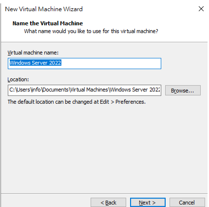
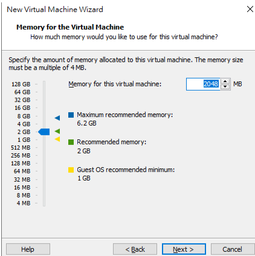

<!DOCTYPE html>
<html>

<head>

<meta charset="utf-8">
<meta name="viewport" content="width=device-width">
<link rel="shortcut icon" href="/pictures/cockroach.jpg"><!--icon-->
<style>
body {
        display: flex;
        justify-content: center;
        align-items: center;
        margin: 0;
        background-color: #f0f0f0; /* 設定背景顏色 */
    }

    .container {
        border: 5px solid #ccc;
        padding: 50px;
        border-radius: 10px;
        box-shadow: 0 8px 10px rgba(0, 0, 0, 0.1);
    }

    a {
        text-decoration: none;
        color: rgb(133, 4, 115);
        transition: color 0.3s;
        font-weight: bold;
    }

    a:hover {
        color: rgb(190, 202, 207);
    }
</style>
<title>Cockroach</title>

<link href="虛擬機.css" rel="stylesheet" type="text/css" />
</head>
<body align="center" bgcolor="">

</body>
<!--标题 size 1~7 -->
<font size="6">
<h1>虛擬機安裝</h1>
<div class="container">
<h2 style="font-size: 60px"><strong>系統安裝</strong></h2>

<pstyle="font-size: 20px"><strong>1.開啟一個新的專案</strong></p><br>
<br>

<pstyle="font-size: 20px"><strong>2.擇Coustom(自訂)</strong></p><br>
<br>

<pstyle="font-size: 20px"><strong>3.選擇新虛擬機導向(預設)
(選擇虛擬機硬體兼容性 該虛擬機需要那些功能)</strong></p><br>
<br>

<pstyle="font-size: 20px"><strong>4.選擇
I will install the operating system later.(稍後進行作業系統安裝)
</strong></p><br>
<br>

<pstyle="font-size: 20px"><strong>5.選擇需要安裝的作業系統</strong></p><br>
<br>

<pstyle="font-size: 20px"><strong>6.虛擬機安裝路徑</strong></p><br>
<br>

<pstyle="font-size: 20px"><strong>7.選擇UEFI(預設)</strong></p><br>
<br>

<pstyle="font-size: 20px"><strong>8.核心數(預設)</strong></p><br>
<br>

<pstyle="font-size: 20px"><strong>9.記憶體(預設)</strong></p><br>
<br>

<pstyle="font-size: 20px"><strong>10.選擇Use host-only networking</strong></p><br>
<br>


<pstyle="font-size: 20px"><strong>11.選擇LSI Logic SAS(預設)</strong></p><br>
<br>

<pstyle="font-size: 20px"><strong>12.選擇SATA</strong></p><br>
<br>

<pstyle="font-size: 20px"><strong>13.選擇Create a new yitual disk(預設)</strong></p><br>
<br>

<pstyle="font-size: 20px"><strong>14.硬碟空間(預設)</strong></p><br>
<br>

<pstyle="font-size: 20px"><strong>15.(預設)</strong></p><br>
<br>

<pstyle="font-size: 20px"><strong>16.確認後點擊Finish(完成)</strong></p><br>
<br>

</div>
<script src="script.js"></script>
</script>
</body>

</html>
